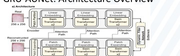
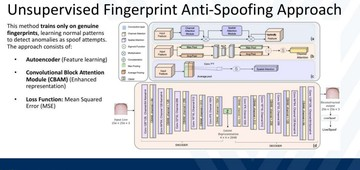
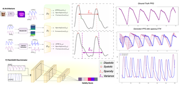
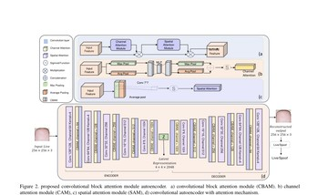
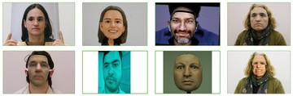
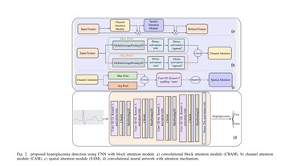
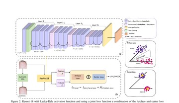
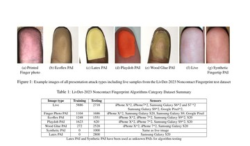

Hi, I’m Banafsheh. I am a Ph.D. student in Computer Science at the University of Central Florida, where I will join the LUQI Group (Laboratory for Uncertainty Quantification and Inference), advised by Ali Siahkoohi, starting August 2026. I hold a B.S. in Physics from Isfahan University of Technology and an M.S. in Computer Science from West Virginia University.
My research spans biometric security, generative models, healthcare AI, and uncertainty-aware intelligent systems. See the Research section below for details.
I have published in venues such as IJCB, EMBC, ECCV Workshop, and SVCC. I also serve as a reviewer for conferences and journals in signal processing, biometrics, and machine learning.
News
- [2026/08]Started Ph.D. in Computer Science at the University of Central Florida, joining the LUQI Group.
- [2026/05]Accepted the AI for All Doctoral Fellowship from the UCF Institute of Artificial Intelligence (IAI).
- [2025/08]Started as Research Assistant in Computer Science at the University of South Florida.
- [2025/06]GRU-AUNet: A Domain Adaptation Framework for Contactless Fingerprint Presentation Attack Detection accepted to the Silicon Valley Cybersecurity Conference (SVCC); received Best Paper Award.
- [2025/03]Completed M.S. in Computer Science at West Virginia University; thesis: Deep Learning-Driven Biometric Security: Advancing Liveness Detection and Anti-Spoofing Techniques.
- [2024/10]rPPG-SysDiAGAN: Systolic-Diastolic Feature Localization in rPPG Using GAN with Multi-Domain Discriminator accepted to the ECCV 2024 Workshop.
- [2024/10]Ranked 2nd place in the Face Liveness Detection Competition (LivDet-Face 2024) at IEEE IJCB.
- [2024/09]Contactless fingerprint biometric anti-spoofing: An unsupervised deep learning approach accepted to IEEE IJCB 2024.
- [2024/07]Advancements in Continuous Glucose Monitoring: Integrating Deep Learning and ECG Signal accepted to IEEE EMBC 2024.
- [2023/09]Ranked 2nd place in the LivDet 2023 Noncontact Fingerprint Competition at IEEE IJCB.
- [2023/09]A universal anti-spoofing approach for contactless fingerprint biometric systems accepted to IEEE IJCB 2023.
Research
Biometric Security & Presentation Attack Detection
Liveness detection and anti-spoofing for contactless fingerprint and face biometrics.
More details
I develop robust methods for presentation attack detection (PAD) and liveness detection in contactless biometric systems, with emphasis on generalization to unseen attacks and domain shifts. My work includes GRU-AUNet, a domain-adaptation framework for contactless fingerprint presentation attack detection, as well as a universal anti-spoofing approach and an unsupervised deep learning method for contactless fingerprint biometric systems. I have also built competition-grade liveness detectors that ranked 2nd in the LivDet 2023 Noncontact Fingerprint and LivDet-Face 2024 challenges at IEEE IJCB. This line of work is further developed in my M.S. thesis, Deep Learning-Driven Biometric Security.
Generative Models & Remote Physiological Sensing
Generative models for camera-based vital sign estimation from rPPG signals.
More details
I apply deep generative models to camera-based vital sign estimation and cardiovascular feature analysis from remote photoplethysmography (rPPG) signals. In rPPG-SysDiAGAN, I proposed a GAN with a multi-domain discriminator to localize systolic and diastolic features in rPPG waveforms, improving both interpretability and accuracy in contactless vital sign monitoring from video.
AI for Healthcare & Biosignals
Machine learning for physiological signals and continuous health monitoring.
More details
I integrate machine learning with physiological signals for continuous health monitoring and clinical applications. In Advancements in Continuous Glucose Monitoring: Integrating Deep Learning and ECG Signal, I study how ECG-based deep learning combined with CGM data can enable non-invasive, multimodal approaches to diabetes management and physiological monitoring.
Publications








Experience
Research Assistant
University of South Florida — Tampa, FL (August 2025–August 2026)
Graduate Research Assistant
West Virginia University — Morgantown, WV (August 2022–March 2025)
- Designed and trained deep learning models in Python and PyTorch for biometrics, presentation attack detection, generative modeling, and healthcare applications.
- Built ML pipelines for preprocessing, training, validation, and benchmarking; co-authored publications at IEEE IJCB, IEEE EMBC, ECCV Workshop, and SVCC.
Education
- Ph.D. in Computer Science — University of Central Florida (August 2026–Present); LUQI Group
- M.S. in Computer Science — West Virginia University (August 2022–March 2025)
- B.S. in Physics — Isfahan University of Technology
Talks
M.S. Thesis Defense — Deep Learning-Driven Biometric Security
West Virginia University, March 2025
Honors & Awards
- AI for All Doctoral Fellowship — University of Central Florida, IAI, 2026
- Best Paper Award — Silicon Valley Cybersecurity Conference (SVCC), 2025
- 2nd Place — LivDet Challenge (Video & Image), IEEE IJCB, 2024
- 2nd Place — LivDet Challenge (Contactless Fingerprint), IEEE IJCB, 2023
Academic Service
Conference Reviewer
- IEEE International Conference on Acoustics, Speech, and Signal Processing (ICASSP)
- IEEE International Conference on Image Processing (ICIP)
Journal Reviewer
- IEEE Transactions on Information Forensics and Security (TIFS)
- IEEE Transactions on Biometrics, Behavior, and Identity Science (TBIOM)
- IEEE Access
- Neurocomputing, Elsevier